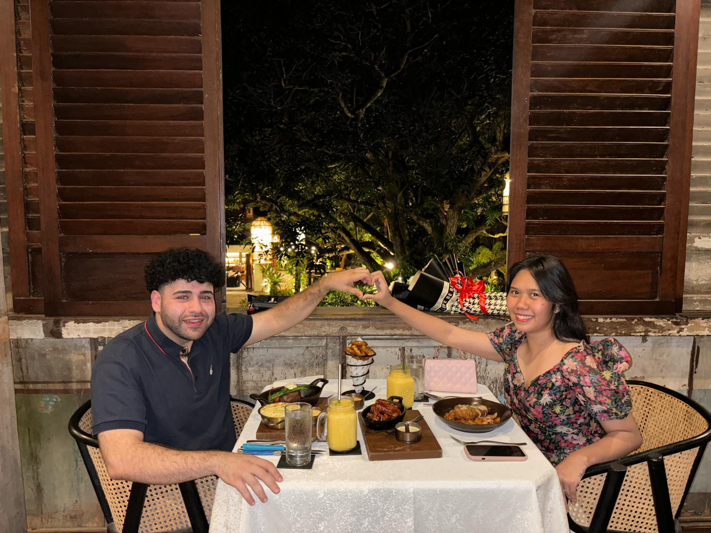
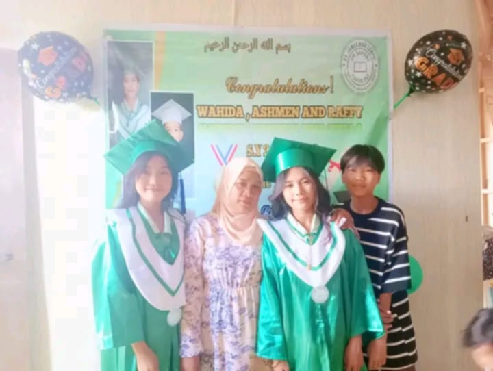
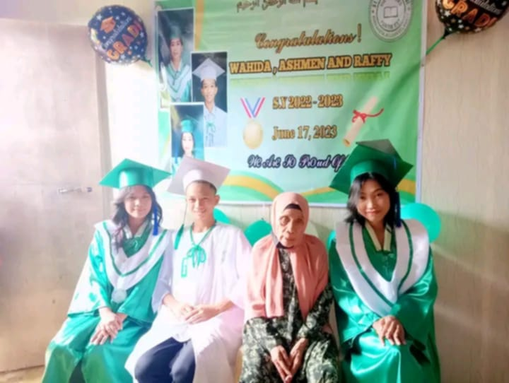

My Favorites
This page highlights some of the things I hold dear in life—my favorite food, couples who inspire me, and people who have shaped my world. Each one plays an important role in who I am today.
Favorite Food
My favorite food is Adobong Manok and Shrimp, a delicious Filipino dish that perfectly combines the savory flavors of chicken and the rich, delicate taste of shrimp. Cooked in a flavorful blend of soy sauce, vinegar, garlic, and spices, this dish offers a perfect balance of salty, sour, and umami flavors that make every bite satisfying. What makes Adobong Manok and Shrimp special is its cultural significance and versatility. It’s a staple in Filipino households, enjoyed during family gatherings and special occasions. The tender chicken absorbs the rich marinade, while the shrimp adds a touch of elegance and a unique sweetness to the dish. Beyond its incredible taste, this dish represents tradition and comfort. Whether paired with steamed rice or enjoyed on its own, Adobong Manok and Shrimp is a timeless favorite that never fails to bring joy and a sense of home.
My Favorite Couple
Ms. Xyla and Mr. Charbel are my favorite couple because of their love, respect, and support for each other. Their bond, built on trust and understanding, is inspiring. I first got to know them through their shared love for playing Mobile Legends (ML), where their teamwork in the game reflects the strength of their real-life relationship. They face challenges together with positivity and resilience, making their connection even more admirable. Their story reminds me of the beauty of true love and lasting commitment.
My Favorite Hero
My favorite hero is my ma'am—the person who has inspired me in so many ways. She is not only a teacher but also a mentor and a guide, always ready to help and encourage me. Her kindness, wisdom, and dedication to her students make her someone I truly look up to. What makes my ma'am special is her ability to make learning enjoyable and meaningful. She has a way of explaining things that makes even the hardest topics easier to understand. Beyond her teaching skills, she shows compassion and patience, always taking the time to listen and support her students. My ma'am has taught me valuable lessons about perseverance, kindness, and the importance of always striving to do my best. She is more than just an educator—she is a hero who makes a positive impact on everyone she meets.
My Favorite Grandmother
My favorite grandmother is a person who has shaped my life with love, wisdom, and kindness. She is a constant source of comfort and strength, always offering valuable advice and unconditional support. Her stories about the past are filled with lessons and experiences that have taught me so much about life. What makes my grandmother so special is her nurturing spirit and her ability to make everyone around her feel loved. She has a way of turning ordinary moments into unforgettable memories, whether it’s through cooking her delicious meals or simply sharing a warm smile. Her wisdom and patience have helped me grow as a person, and her love has made me feel safe and cared for. My grandmother is not only a beloved family member but a true hero in my life, and I am grateful for every moment spent with her.